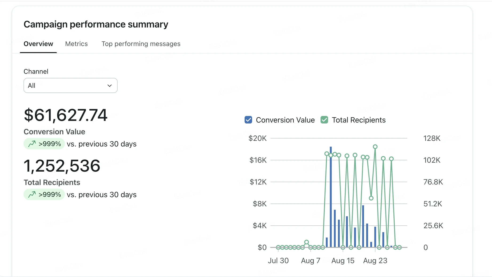
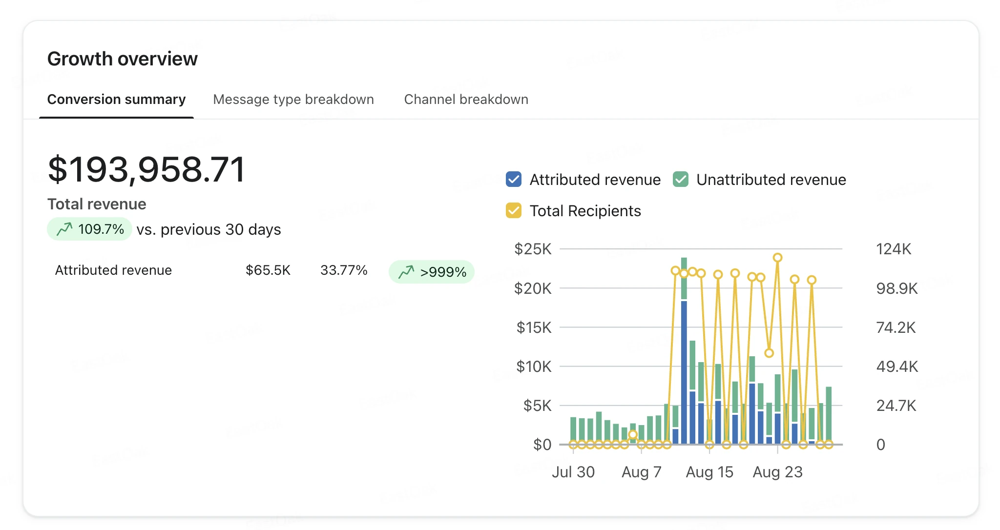

Back to all work
PRODUCT LAUNCH · LANDING PAGE · EDM
DH20 Product Launch
A Preorder Page & Email Campaign in Two Weeks
The DH20 early-bird launch had a two-week preparation window. I structured the agreed product benefits and early-bird offer, designed the preorder page and email campaign, and followed visual production and launch checks. AI supported UI exploration and initial content drafts; the final page was completed with the development team.
My roleLanding Page Design · Email Framework · Development Collaboration

PROJECT OVERVIEW
[2 WEEKS]
AI-ASSISTED COMMERCE
My Contribution
- MY ROLE
- UX/UI, visual and content design, project coordination and launch checks.
- TEAM
- Product, marketing, development and content teams.
- SCOPE
- Launch Page · EDM
AI Visuals · QA
- TOOLS USED
- FigmaShopifyCodexAdobeKlaviyo
01 · PAGE STRUCTURE
Explain the product and offer before asking for the purchase.
Using the agreed product benefits and early-bird offer, I organized the journey from understanding the product and confirming the offer to adding to cart, reviewing the order and checking out.
Product media, pricing, benefits and the purchase button stayed above the fold. Feature comparisons and FAQs appeared further down for customers who needed more detail.
02 · UI EXPLORATION
One wireframe. Three directions to compare.
I used the same wireframe in Figma Make to generate three browsable directions, then reviewed the completeness of the first screen, text legibility and visibility of the purchase action.
01
3 AI DIRECTIONS
DIVERGE · EXPLORE OPTIONS
Explore alternatives before deciding what to retain.
SELECT A DIRECTION TO COMPARE


Use the tabs to compare directions · Scroll within each image to explore the full page
03
HTML · SHOPIFY
IMPLEMENT · BRING IT TO LIFE
The final mobile experience.


FINAL PAGE · PURCHASE FLOW
Product page, cart and checkout.
03 · AI VISUAL EXPLORATION
Over 100 visual explorations. Twelve selected examples. Three directions.
People and food scenes showed everyday use; product hero images emphasized the smoke and form; balcony and patio scenes demonstrated how the tabletop product fit into outdoor spaces.
I compared lighting, composition and product representation, rejected images that did not fit the brand or product, and applied the selected directions to the page and emails.


03 · APPLY TO PAGE
The product page in context.
Scroll inside the preview.
Open full page ↗04 · EDM CAMPAIGN
Brand rules first. AI-assisted emails second.
I provided Codex / AI with the brand guidelines and the requirements for each email, using the same rules to create different campaign themes. I then reviewed each email’s product information, layout and calls to action.
These eight selected examples show the shared brand rules across teasers, use cases, product education and deadline reminders. They are a selection, not the entire email campaign.


Swipe through selected examples · Select an image to view the full-resolution email
CAMPAIGN RESULT
Support early-bird purchases with email, without paid advertising.
Emails introduced the product and early-bird offer to existing customers and subscribers, directing them to the product page to purchase.
Klaviyo figures are shown using each dashboard’s own definitions. They are not added together or combined with the full-cycle net revenue below, and are not attributed solely to the eight selected emails. The records do not establish which products were purchased, so they are not presented as DH20-only revenue.


Team Results · Full Preorder Cycle
Both the early-bird and preorder phases exceeded their sales targets.
August 12–September 19, 2026 · Full DH20 preorder cycle
My contributionTranslated the agreed benefits and offer into the preorder page, used brand guidelines with Codex / AI to produce the email series, and followed content checks and launch coordination.
Team outcomeSales and net revenue reflect the combined work of product, marketing, development and content teams, using the final campaign report’s definitions.
Two phases. Two targets exceeded.
Early bird: August 12–23 · Preorder: August 24–September 19
Reported preorder-phase ROI: 4.69. Target achievement percentages are rounded as in the final report. The ROI applies only to the August 24–September 19 preorder phase.